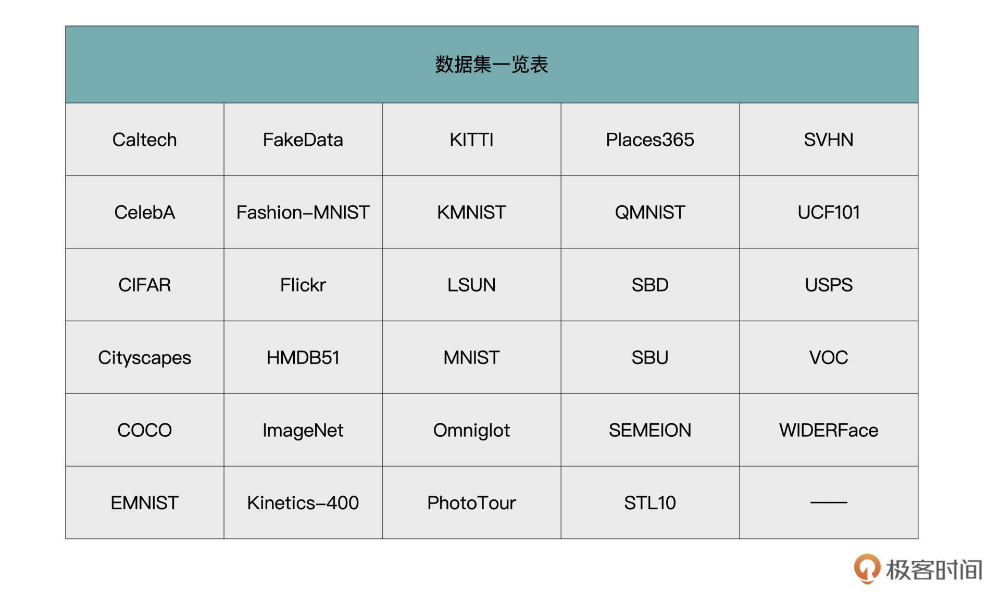
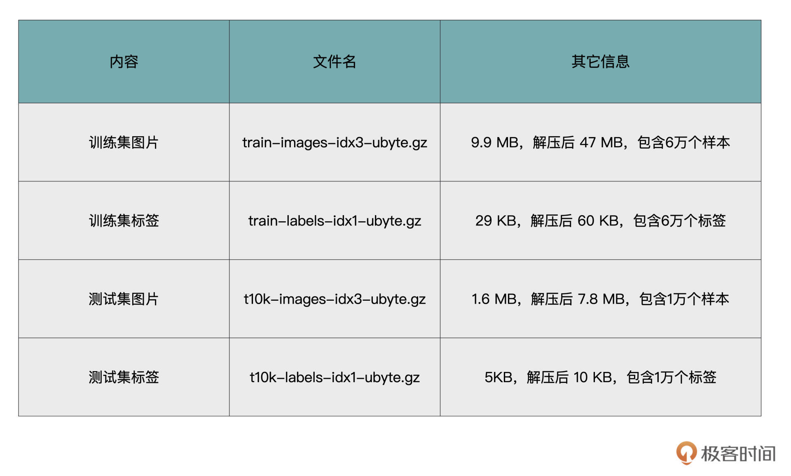
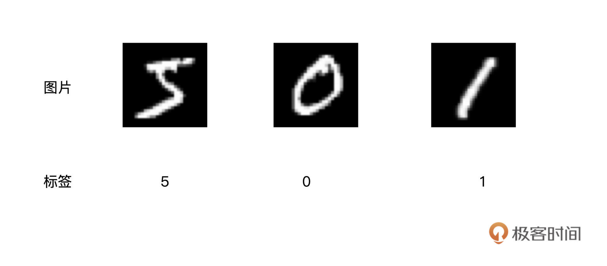
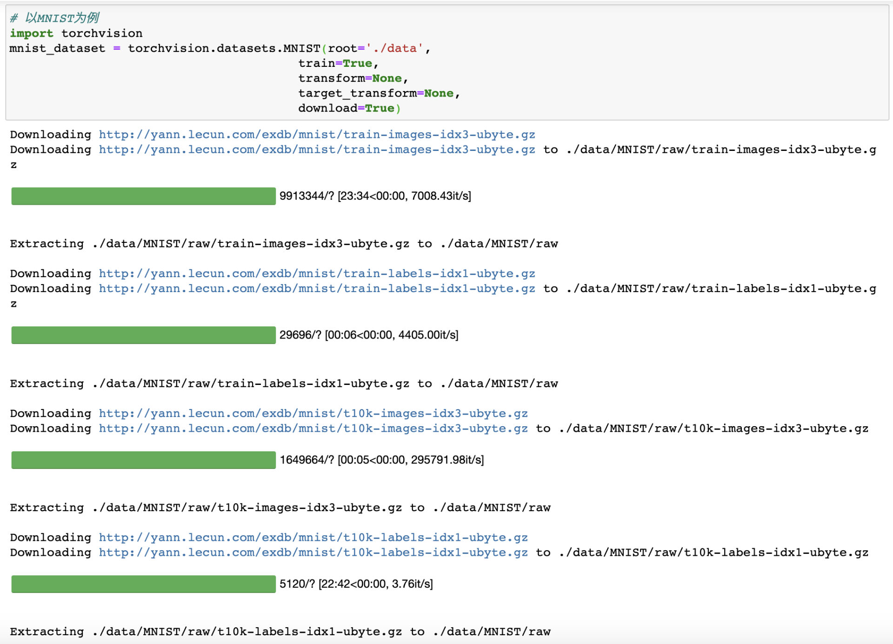
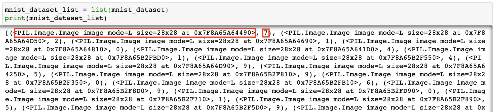
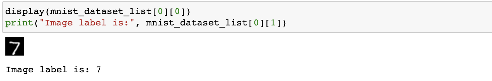

- 00 开篇词 如何高效入门PyTorch？.md.html
- 01 PyTorch：网红中的顶流明星.md.html
- 02 NumPy（上）：核心数据结构详解.md.html
- 03 NumPy（下）：深度学习中的常用操作.md.html
- 04 Tensor：PyTorch中最基础的计算单元.md.html
- 05 Tensor变形记：快速掌握Tensor切分、变形等方法.md.html
- 06 Torchvision（上）：数据读取，训练开始的第一步.md.html
- 07 Torchvision（中）：数据增强，让数据更加多样性.md.html
- 08 Torchvision（下）：其他有趣的功能.md.html
- 09 卷积（上）：如何用卷积为计算机“开天眼”？.md.html
- 10 卷积（下）：如何用卷积为计算机“开天眼”？.md.html
- 11 损失函数：如何帮助模型学会“自省”？.md.html
- 12 计算梯度：网络的前向与反向传播.md.html
- 13 优化方法：更新模型参数的方法.md.html
- 14 构建网络：一站式实现模型搭建与训练.md.html
- 15 可视化工具：如何实现训练的可视化监控？.md.html
- 16 分布式训练：如何加速你的模型训练？.md.html
- 17 图像分类（上）：图像分类原理与图像分类模型.md.html
- 18 图像分类（下）：如何构建一个图像分类模型_.md.html
- 19 图像分割（上）：详解图像分割原理与图像分割模型.md.html
- 20 图像分割（下）：如何构建一个图像分割模型？.md.html
- 21 NLP基础（上）：详解自然语言处理原理与常用算法.md.html
- 22 NLP基础（下）：详解语言模型与注意力机制.md.html
- 23 情感分析：如何使用LSTM进行情感分析？.md.html
- 24 文本分类：如何使用BERT构建文本分类模型？.md.html
- 25 摘要：如何快速实现自动文摘生成？.md.html
- 加餐 机器学习其实就那么几件事.md.html
- 用户故事 Tango：师傅领进门，修行在个人.md.html
- 答疑篇 思考题答案集锦.md.html
- 结束语 人生充满选择，选择与努力同样重要.md.html
- 捐赠
06 Torchvision（上）：数据读取，训练开始的第一步
你好，我是方远。
今天起我们进入模型训练篇的学习。如果将模型看作一辆汽车，那么它的开发过程就可以看作是一套完整的生产流程，环环相扣、缺一不可。这些环节包括数据的读取、网络的设计、优化方法与损失函数的选择以及一些辅助的工具等。未来你将尝试构建自己的豪华汽车，或者站在巨人的肩膀上对前人的作品进行优化。
试想一下，如果你对这些基础环节所使用的方法都不清楚，你还能很好地进行下去吗？所以通过这个模块，我们的目标是先把基础打好。通过这模块的学习，对于PyTorch都为我们提供了哪些丰富的API，你就会了然于胸了。
Torchvision 是一个和 PyTorch 配合使用的 Python 包，包含很多图像处理的工具。我们先从数据处理入手，开始PyTorch的学习的第一步。这节课我们会先介绍Torchvision的常用数据集及其读取方法，在后面的两节课里，我再带你了解常用的图像处理方法与Torchvision其它有趣的功能。
PyTorch中的数据读取
训练开始的第一步，首先就是数据读取。PyTorch为我们提供了一种十分方便的数据读取机制，即使用Dataset类与DataLoader类的组合，来得到数据迭代器。在训练或预测时，数据迭代器能够输出每一批次所需的数据，并且对数据进行相应的预处理与数据增强操作。
下面我们分别来看下Dataset类与DataLoader类。
Dataset类
PyTorch中的Dataset类是一个抽象类，它可以用来表示数据集。我们通过继承Dataset类来自定义数据集的格式、大小和其它属性，后面就可以供DataLoader类直接使用。
其实这就表示，无论使用自定义的数据集，还是官方为我们封装好的数据集，其本质都是继承了Dataset类。而在继承Dataset类时，至少需要重写以下几个方法：
- __init__()：构造函数，可自定义数据读取方法以及进行数据预处理；
- __len__()：返回数据集大小；
- __getitem__()：索引数据集中的某一个数据。
光看原理不容易理解，下面我们来编写一个简单的例子，看下如何使用Dataset类定义一个Tensor类型的数据集。
import torch
from torch.utils.data import Dataset
class MyDataset(Dataset):
# 构造函数
def __init__(self, data_tensor, target_tensor):
self.data_tensor = data_tensor
self.target_tensor = target_tensor
# 返回数据集大小
def __len__(self):
return self.data_tensor.size(0)
# 返回索引的数据与标签
def __getitem__(self, index):
return self.data_tensor[index], self.target_tensor[index]
结合代码可以看到，我们定义了一个名字为MyDataset的数据集，在构造函数中，传入Tensor类型的数据与标签；在__len__函数中，直接返回Tensor的大小；在__getitem__函数中返回索引的数据与标签。
下面，我们来看一下如何调用刚才定义的数据集。首先随机生成一个10*3维的数据Tensor，然后生成10维的标签Tensor，与数据Tensor相对应。利用这两个Tensor，生成一个MyDataset的对象。查看数据集的大小可以直接用len()函数，索引调用数据可以直接使用下标。
# 生成数据
data_tensor = torch.randn(10, 3)
target_tensor = torch.randint(2, (10,)) # 标签是0或1
# 将数据封装成Dataset
my_dataset = MyDataset(data_tensor, target_tensor)
# 查看数据集大小
print('Dataset size:', len(my_dataset))
'''
输出：
Dataset size: 10
'''
# 使用索引调用数据
print('tensor_data[0]: ', my_dataset[0])
'''
输出:
tensor_data[0]: (tensor([ 0.4931, -0.0697, 0.4171]), tensor(0))
'''
DataLoader类
在实际项目中，如果数据量很大，考虑到内存有限、I/O速度等问题，在训练过程中不可能一次性的将所有数据全部加载到内存中，也不能只用一个进程去加载，所以就需要多进程、迭代加载，而DataLoader就是基于这些需要被设计出来的。
DataLoader是一个迭代器，最基本的使用方法就是传入一个Dataset对象，它会根据参数 batch_size的值生成一个batch的数据，节省内存的同时，它还可以实现多进程、数据打乱等处理。
DataLoader类的调用方式如下：
from torch.utils.data import DataLoader
tensor_dataloader = DataLoader(dataset=my_dataset, # 传入的数据集, 必须参数
batch_size=2, # 输出的batch大小
shuffle=True, # 数据是否打乱
num_workers=0) # 进程数, 0表示只有主进程
# 以循环形式输出
for data, target in tensor_dataloader:
print(data, target)
'''
输出:
tensor([[-0.1781, -1.1019, -0.1507],
[-0.6170, 0.2366, 0.1006]]) tensor([0, 0])
tensor([[ 0.9451, -0.4923, -1.8178],
[-0.4046, -0.5436, -1.7911]]) tensor([0, 0])
tensor([[-0.4561, -1.2480, -0.3051],
[-0.9738, 0.9465, 0.4812]]) tensor([1, 0])
tensor([[ 0.0260, 1.5276, 0.1687],
[ 1.3692, -0.0170, -1.6831]]) tensor([1, 0])
tensor([[ 0.0515, -0.8892, -0.1699],
[ 0.4931, -0.0697, 0.4171]]) tensor([1, 0])
'''
# 输出一个batch
print('One batch tensor data: ', iter(tensor_dataloader).next())
'''
输出:
One batch tensor data: [tensor([[ 0.9451, -0.4923, -1.8178],
[-0.4046, -0.5436, -1.7911]]), tensor([0, 0])]
'''
结合代码，我们梳理一下DataLoader中的几个参数，它们分别表示：
- dataset：Dataset类型，输入的数据集，必须参数；
- batch_size：int类型，每个batch有多少个样本；
- shuffle：bool类型，在每个epoch开始的时候，是否对数据进行重新打乱；
- num_workers：int类型，加载数据的进程数，0意味着所有的数据都会被加载进主进程，默认为0。
什么是Torchvision
PyTroch官方为我们提供了一些常用的图片数据集，如果你需要读取这些数据集，那么无需自己实现，只需要利用Torchvision就可以搞定。
Torchvision 是一个和 PyTorch 配合使用的 Python 包。它不只提供了一些常用数据集，还提供了几个已经搭建好的经典网络模型，以及集成了一些图像数据处理方面的工具，主要供数据预处理阶段使用。简单地说，Torchvision 库就是常用数据集+常见网络模型+常用图像处理方法。
Torchvision的安装方式同样非常简单，可以使用conda安装，命令如下：
conda install torchvision -c pytorch
或使用pip进行安装，命令如下：
pip install torchvision
Torchvision中默认使用的图像加载器是PIL，因此为了确保Torchvision正常运行，我们还需要安装一个Python的第三方图像处理库——Pillow库。Pillow提供了广泛的文件格式支持，强大的图像处理能力，主要包括图像储存、图像显示、格式转换以及基本的图像处理操作等。
使用conda安装Pillow的命令如下：
conda install pillow
使用pip安装Pillow的命令如下：
pip install pillow
利用Torchvision读取数据
安装好Torchvision之后，我们再来接着看看。Torchvision库为我们读取数据提供了哪些支持。
Torchvision库中的torchvision.datasets包中提供了丰富的图像数据集的接口。常用的图像数据集，例如MNIST、COCO等，这个模块都为我们做了相应的封装。
下表中列出了torchvision.datasets包所有支持的数据集。各个数据集的说明与接口，详见链接https://pytorch.org/vision/stable/datasets.html。

这里我想提醒你注意，torchvision.datasets这个包本身并不包含数据集的文件本身，它的工作方式是先从网络上把数据集下载到用户指定目录，然后再用它的加载器把数据集加载到内存中。最后，把这个加载后的数据集作为对象返回给用户。
为了让你进一步加深对知识的理解，我们以MNIST数据集为例，来说明一下这个模块具体的使用方法。
MNIST数据集简介
MNIST数据集是一个著名的手写数字数据集，因为上手简单，在深度学习领域，手写数字识别是一个很经典的学习入门样例。
MNIST数据集是NIST数据集的一个子集，MNIST 数据集你可以通过这里下载。它包含了四个部分，我用表格的方式为你做了梳理。

MNIST数据集是ubyte格式存储，我们先将“训练集图片”解析成图片格式，来直观地看一看数据集具体是什么样子的。具体怎么解析，我在后面数据预览再展开。

数据读取
接下来，我们看一下如何使用Torchvision来读取MNIST数据集。
对于torchvision.datasets所支持的所有数据集，它都内置了相应的数据集接口。例如刚才介绍的MNIST数据集，torchvision.datasets就有一个MNIST的接口，接口内封装了从下载、解压缩、读取数据、解析数据等全部过程。
这些接口的工作方式差不多，都是先从网络上把数据集下载到指定目录，然后再用加载器把数据集加载到内存中，最后将加载后的数据集作为对象返回给用户。
以MNIST为例，我们可以用如下方式调用：
# 以MNIST为例
import torchvision
mnist_dataset = torchvision.datasets.MNIST(root='./data',
train=True,
transform=None,
target_transform=None,
download=True)
torchvision.datasets.MNIST是一个类，对它进行实例化，即可返回一个MNIST数据集对象。构造函数包括包含5个参数：
- root：是一个字符串，用于指定你想要保存MNIST数据集的位置。如果download是Flase，则会从目标位置读取数据集；
- download：是布尔类型，表示是否下载数据集。如果为True，则会自动从网上下载这个数据集，存储到root指定的位置。如果指定位置已经存在数据集文件，则不会重复下载；
- train：是布尔类型，表示是否加载训练集数据。如果为True，则只加载训练数据。如果为False，则只加载测试数据集。这里需要注意，并不是所有的数据集都做了训练集和测试集的划分，这个参数并不一定是有效参数，具体需要参考官方接口说明文档；
- transform：用于对图像进行预处理操作，例如数据增强、归一化、旋转或缩放等。这些操作我们会在下节课展开讲解；
- target_transform：用于对图像标签进行预处理操作。
运行上述的代码，我们可以得到下图所示的效果。从图中我们可以看出，程序首先去指定的网址下载了MNIST数据集，然后进行了解压缩等操作。如果你再次运行相同的代码，则不会再有下载的过程。

看到这，你可能还有疑问，好奇我们得到的mnist_dataset是什么呢？
如果你用type函数查看一下mnist_dataset的类型，就可以得到torchvision.datasets.mnist.MNIST ，而这个类是之前我们介绍过的Dataset类的派生类。相当于torchvision.datasets ，它已经帮我们写好了对Dataset类的继承，完成了对数据集的封装，我们直接使用即可。
这里我们主要以MNIST为例，进行了说明。其它的数据集使用方法类似，调用的时候你只要需要将类名“MNIST”换成其它数据集名字即可。
对于不同的数据集，数据格式都不尽相同，而torchvision.datasets则帮助我们完成了各种不同格式的数据的解析与读取，可以说十分便捷。而对于那些没有官方接口的图像数据集，我们也可以使用以torchvision.datasets.ImageFolder接口来自行定义，在图像分类的实战篇中，就是使用ImageFolder进行数据读取的，你可以到那个时候再看一看。
数据预览
完成了数据读取工作，我们得到的是对应的mnist_dataset，刚才已经讲过了，这是一个封装了的数据集。
如果想要查看mnist_dataset中的具体内容，我们需要把它转化为列表。（如果IOPub data rate超限，可以只加载测试集数据，令train=False）
mnist_dataset_list = list(mnist_dataset)
print(mnist_dataset_list)
执行结果如下图所示。

从运行结果中可以看出，转换后的数据集对象变成了一个元组列表，每个元组有两个元素，第一个元素是图像数据，第二个元素是图像的标签。
这里图像数据是PIL.Image.Image类型的，这种类型可以直接在Jupyter中显示出来。显示一条数据的代码如下。
display(mnist_dataset_list[0][0])
print("Image label is:", mnist_dataset_list[0][1])
运行结果如下图所示。可以看出，数据集mnist_dataset中的第一条数据是图片手写数字“7”，对应的标签是“7”。

好，如果你也得到了上面的运行结果，说明你的操作没问题，恭喜你成功完成了读取操作。
小结
恭喜你完成了这节课的学习。我们已经迈出了模型训练的第一步，学会了如何读取数据。
今天的重点就是掌握两种读取数据的方法，也就是自定义和读取常用图像数据集。
最通用的数据读取方法，就是自己定义一个Dataset的派生类。而读取常用的图像数据集，就可以利用PyTorch提供的视觉包Torchvision。
Torchvision库为我们读取数据提供了丰富的图像数据集的接口。我用手写数字识别这个经典例子，给你示范了如何使用Torchvision来读取MNIST数据集。
torchvision.datasets继承了Dataset 类，它在预定义许多常用的数据集的同时，还预留了数据预处理与数据增强的接口。在下一节课中，我们就会接触到这些数据增强函数，并学习如何进行数据增强。
每课一练
在PyTorch中，我们要定义一个数据集，应该继承哪一个类呢？
欢迎你在留言区和我交流互动，也推荐你把这节课内容分享给更多的朋友、同事，跟他一起学习进步。
© 2019 - 2023 Liangliang Lee. Powered by gin and hexo-theme-book.